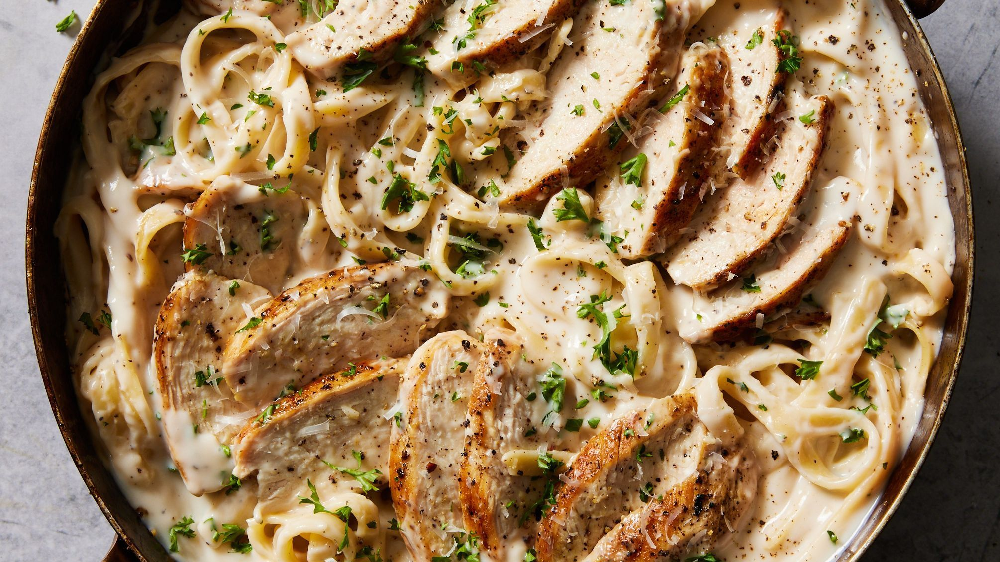

Chicken Alfredo

Description
Chicken Alfredo is a rich and creamy pasta dish that combines tender slices of
chicken breast with a velvety Parmesan cheese sauce served over fettuccine noodles.
To prepare it, start by seasoning boneless, skinless chicken breasts with salt,
pepper, and optionally garlic powder. Cook the chicken in a skillet with a bit of
olive oil over medium heat until golden brown and fully cooked through, then set
it aside to rest before slicing. In the same pan, melt butter and sauté minced
garlic until fragrant. Add heavy cream and bring it to a gentle simmer, then stir
in freshly grated Parmesan cheese, whisking until the sauce becomes smooth and creamy.
While the sauce simmers, boil a pot of salted water and cook the fettuccine until al dente.
Drain the pasta and add it to the Alfredo sauce, tossing until the noodles are evenly coated.
Add the sliced chicken back into the pan and stir to combine everything. If the sauce is too
thick, a splash of reserved pasta water can help loosen it. Finish with a sprinkle of parsley
or extra cheese on top. Chicken Alfredo is comforting, indulgent, and simple to make—perfect
for a cozy dinner or special occasion.
Ingredients
- 2 boneless, skinless chicken breasts
- Salt and black pepper, to taste
- ½ teaspoon garlic powder (optional)
- 2 tablespoons olive oil or butter (for cooking chicken)
- 3 tablespoons butter (for the sauce)
- 2–3 garlic cloves, minced
- 1½ cups heavy cream
- 1 cup freshly grated Parmesan cheese
- 250g (about 9 oz) fettuccine pasta
- 2 tablespoons chopped fresh parsley (optional, for garnish)
- Reserved pasta water (optional, to adjust sauce thickness)
Steps
- Season the chicken breasts on both sides with salt, black pepper, and garlic powder (if using).
- Heat 2 tablespoons of olive oil or butter in a large skillet over medium heat.
- Add the chicken breasts and cook for about 5–6 minutes per side, or until golden brown and fully cooked through.
- Remove the chicken from the skillet and let it rest for a few minutes before slicing it into strips.
- In the same skillet, melt 3 tablespoons of butter over medium heat.
- Add the minced garlic and sauté for about 30 seconds until fragrant.
- Pour in 1½ cups of heavy cream and bring it to a gentle simmer, stirring frequently.
- Add 1 cup of freshly grated Parmesan cheese to the cream and stir continuously until the sauce is smooth and thickened.
- In a separate pot, bring salted water to a boil and cook 250g fettuccine pasta according to the package instructions until al dente.
- Drain the pasta and reserve a small cup of pasta water.
- Add the cooked pasta to the Alfredo sauce and toss to coat evenly; use reserved pasta water to loosen the sauce if needed.
- Add the sliced chicken back to the pan and stir to combine everything.
- Cook for 1–2 more minutes until everything is heated through.
- Serve hot, garnished with chopped fresh parsley and extra Parmesan if desired.
Home